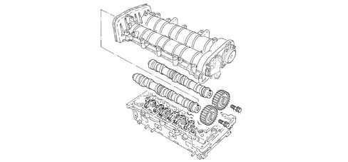
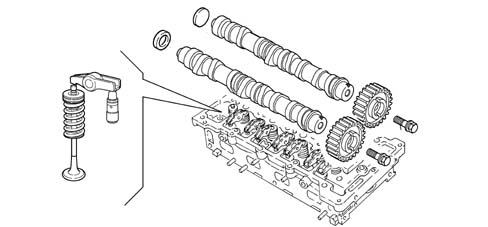

1036G camshaft (1) in top heads (2)
- Path
- Descriptions > 10 ENGINE > 1036 TIMING SYSTEM > 1036G camshaft (1) in top heads (2)
- Kind
- system description
- Applies to
- engines: 1.3 JTD; all production periods
- Interactive page
- https://sloeber94.github.io/elrnDB-lYpsln/en/#/2427394
Applies to: engines: 1.3 JTD; all production periods
CAMSHAFTS
Cast iron, tempered and hardened on the cams.

Applies to: engines: 1.3 JTD; all production periods
CAMSHAFTS
The exhaust camshaft is driven directly by the chain and transmits motion to the inlet camshaft via a pair of straight toothed gears.
The exhaust camshaft also drives the high-pressure pump, while the inlet camshaft drives the vacuum unit.
Applies to: engines: 1.3 JTD; all production periods
TAPPETS
There is a hydraulic tappet for each valve activated by a rocker arm, in turn, moved by the camshaft.
The rocker arms are designed to prevent serious damage to the other engine components if the timing belt breaks or comes off; in effect, on account of their special design the absorb the stresses caused through the contact between the valves and the pistons.
